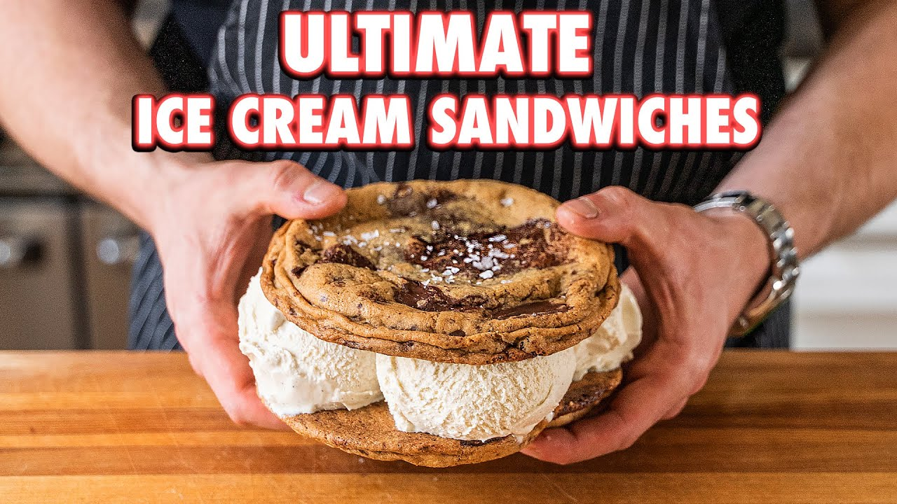

Ice Cream Sandwitch

Description:
Anyone can make a regular old sandwich, it's simple. How about the coveted ice cream sandwich but make it GIANT.
Ingredients:
Cookie Base
- Water
- 325g semi-sweet chocolate
- 227g salted butter
- 210g granulated sugar
- 2 eggs
- 1 Egg yolk
- 2 tsp (6g) vanilla extract
- 300g all-purpose flour
- 1 tsp (5g) baking soda
- 2 tsp (5g) espresso powder
- 60g unsweetened cocoa powder
Ice cream
- 700ml whole milk
- 1 vanilla bean pod
- 4 egg yolks
- 260g granulated white sugar
- 700ml heavy whipping cream
Cookie
- 168g unsalted butter
- 161 packed light brown sugar
- 150 granulated white sugar
- 1.5 tsp (9 g) sea salt
- 1 egg
- 1 egg yolk
- 197g all-purpose flour
- 225g 60-70% cocoa dark chocolate, roughly chopped
- Flaky salt
Instructions:
Vanilla Ice Cream
- To a medium saucepan, add whole milk and the beans of the vanilla pod. Heat over medium heat, stirring occasionally.
- While that heats, add four egg yolks to a large bowl and mix in granulated white sugar until combined and in a sandy-egg mixture.
- Once the milk is hot but not boiling, begin whisking small ladlefuls of the hot milk into the yolk mixture until the mixture is hot.
- Once the mixture is hot add back to the pot of milk. Heating and stirring over medium heat until it thickens, about 5-7 minutes. Make sure not to simmer or boil.
- Strain the mixture into a bowl set in an ice bath to cool it down.
- Add in heavy whipping cream and combine.
- Add custard base to an ice cream maker and churn to the manufacturer's directions.
- Adding premade ice cream to a stand mixer and beating until softened works too.
Giant Cookie Ice Cream Sandwich
- Start by melting unsalted butter in a medium saucepan.
- In a bowl or stand mixer, combine packed light brown sugar, granulated white sugar, and whisk together using the whisk attachment until combined.
- Stream in the melted butter, fine sea salt, and once combined add in a large egg followed by one egg yolk. Whisk vigorously until emulsified.
- Switch to the paddle attachment and while whisking add in all-purpose flour and mix until combined.
- Using a spatula, fold in the roughly chopped dark chocolate until combined. Cover with plastic wrap and refrigerate for 1 hour or overnight.
- Using an ice cream scoop, scoop out as many cookie balls as possible and place on a parchment-lined baking sheet.
- Bake in a 350F oven for 15-17 minutes. Intentionally picking the pan up and dropping it every 4-5 minutes.
- Once done, remove the cookies out to cool and top with flaky salt.
- Stack on a few scoops of ice cream to the bottom side of one cookie before topping with a second cookie.